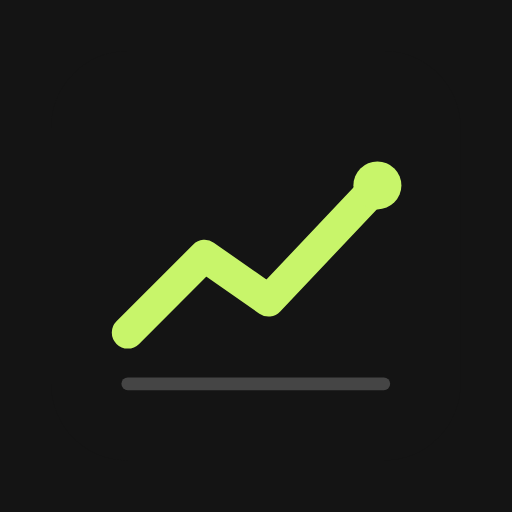

Trade Journal already has a look: a charcoal ground, warm off-white text, one lime that means both this and won, red for losses, Syne for titles and numbers, DM Mono for everything else. This guide names it so the app and the GitLab repo stay the same product. It invents nothing.
Every colour below is a token in src/style.css at v0.1.1. The app is dark only. The headline is the manifest's own line: Log each trade with what you felt and what you did wrong, then see where the money goes.
A lime line that climbs, dips once and climbs again to a dot at the top right, over a grey baseline, on a charcoal rounded square. public/icon.svg is the source and the favicon; the PNGs are rasters of the same drawing.

A 512 grid with 96 corners (18.75%). The line runs 96,352 → 192,256 → 272,312 → 408,168 at stroke 40 with round caps and joins, and ends in a dot of radius 30. The baseline runs 96 → 416 at y 416, stroke 16. Three colours, all tokens: --bg #141414, --accent #c8f56a, --border2 #454545.
icon.svg is the favicon. icon-192.png is the apple-touch-icon and a manifest icon; icon-512.png and icon-maskable-512.png fill the rest of the manifest. The README opens with icon-512 at 88px. Inside the app the sidebar shows the name only.
Syne Bold, uppercase, 15px, tracking +6%, in lime, with a DM Mono sub-line in muted grey underneath (left, the sidebar as built). The sub-line says where trades are saved: Demo, This device or Google Sheet. On the right, the installed app: the icon over its short name, Journal. The full name is Trade Journal; the repo is futuretracker and the site futuretracker.ethantam.dev.
Charcoal greys do the work and the text is a warm off-white, not pure white. Lime is the accent and also the colour of a win, so it marks both what you picked and what went right. Red is a loss or a mistake, amber is breakeven, blue is for contract names and anything still pending. Each has a 13% tint for selected backgrounds.
--bg#141414--surface#1c1c1c--surface2#242424--border#333--border2#454545--text#f4f1ec--muted#a3a3a3--muted2#8c8c8c--accent#c8f56a--red#ff7a7a--amber#ffc166--blue#7ec8f7--accent-dimrgba(200,245,106,.13)--red-dimrgba(255,107,107,.13)--amber-dimrgba(255,193,102,.13)--blue-dimrgba(126,200,247,.13)Behind selected tags and outcome buttons. Heatmap days use stronger fills: lime and red at 80%, amber at 50%.
The primary button is lime with black text, and its hover is a brighter lime (#d4ff70). Text selection is lime on black.
Two faces from Google Fonts. Syne (500 to 700) for the wordmark, page titles, symbols and every big number. DM Mono (300 to 500) for everything else, body included, at a 14px base. Labels are uppercase with +6% tracking (--track).
Numbers in the specimens are samples, not results.
Three things the app already draws. Use them, not stock charts.
A surface card with an 8px corner, a big Syne number and a mono capital label. Lime or red only when the number is a result.
Outlined, 4px corners. A picked setup lights lime; a picked mistake lights red. The names are the app's own lists.
A day per square, 12px with 2px corners: lime for profit, red for loss, amber for breakeven, an outlined square for no trades.
From the README, the manifest and the copy already in the app.
Every file the brand lives in today. Nothing on this page is new artwork.
public/icon.svg | The source drawing; the favicon |
public/icon-512.png | Manifest icon; the README's header image |
public/icon-192.png | Manifest icon and apple-touch-icon |
public/icon-maskable-512.png | Manifest maskable |
public/manifest.webmanifest | Names (Trade Journal / Journal), charcoal theme and background |
src/style.css | Every colour token |
docs/screenshots/ | README images, demo data |
Things this guide found and did not change.
#ff6b6b, a step off --red (#ff7a7a).og: tags, so a shared link unfurls without an image.Copied from the repo as it is, so this page and the app can't drift.
:root {
--bg: #141414;
--surface: #1c1c1c;
--surface2: #242424;
--border: #333;
--border2: #454545;
--text: #f4f1ec;
--muted: #a3a3a3;
--muted2: #8c8c8c;
--accent: #c8f56a;
--accent-dim: rgba(200, 245, 106, 0.13);
--accent-dim2: rgba(200, 245, 106, 0.07);
--red: #ff7a7a;
--red-dim: rgba(255, 107, 107, 0.13);
--amber: #ffc166;
--amber-dim: rgba(255, 193, 102, 0.13);
--blue: #7ec8f7;
--blue-dim: rgba(126, 200, 247, 0.13);
--mono: "DM Mono", ui-monospace, monospace;
--display: "Syne", "DM Mono", sans-serif;
--fs-xs: 12px;
--fs-sm: 13px;
--fs-md: 14px;
--track: 0.06em;
--radius: 8px;
}.logo-title {
font-family: var(--display);
font-weight: 700;
font-size: 15px;
letter-spacing: var(--track);
text-transform: uppercase;
color: var(--accent);
}
.logo-sub {
font-size: var(--fs-xs);
color: var(--muted);
margin-top: 4px;
}<title>Trade Journal</title>
<meta name="theme-color" content="#141414">
<link rel="icon" href="/icon.svg" type="image/svg+xml">
<link rel="apple-touch-icon" href="/icon-192.png">
<link href="https://fonts.googleapis.com/css2?family=DM+Mono:ital,wght@0,300;0,400;0,500;1,300&family=Syne:wght@500;600;700&display=swap" rel="stylesheet"><svg xmlns="http://www.w3.org/2000/svg" viewBox="0 0 512 512">
<rect width="512" height="512" rx="96" fill="#141414"/>
<path d="M96 352 L192 256 L272 312 L408 168" fill="none" stroke="#c8f56a" stroke-width="40" stroke-linecap="round" stroke-linejoin="round"/>
<circle cx="408" cy="168" r="30" fill="#c8f56a"/>
<path d="M96 416 H416" stroke="#454545" stroke-width="16" stroke-linecap="round"/>
</svg>